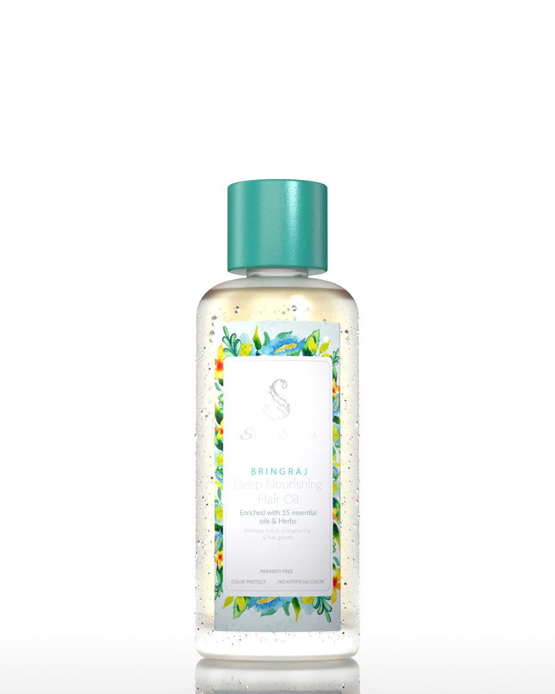
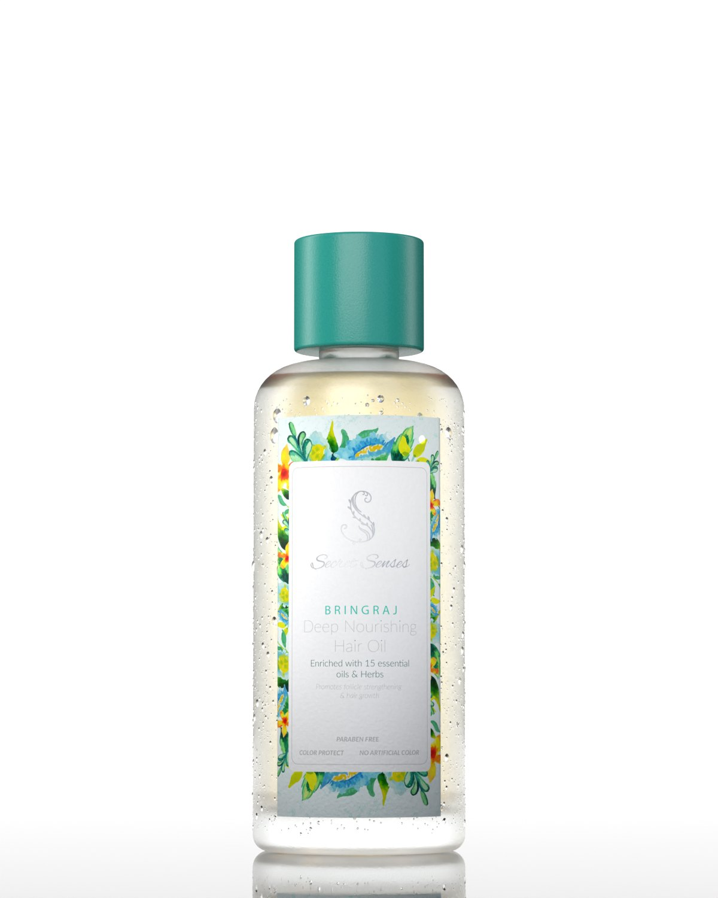

Study 79 · 4 November 2026
Secret Senses, a sky map
The same bottle with a real place to reflect. It shows only in reflections, so the label's light stays as it was.





Study 79 · 4 November 2026
The same bottle with a real place to reflect. It shows only in reflections, so the label's light stays as it was.

